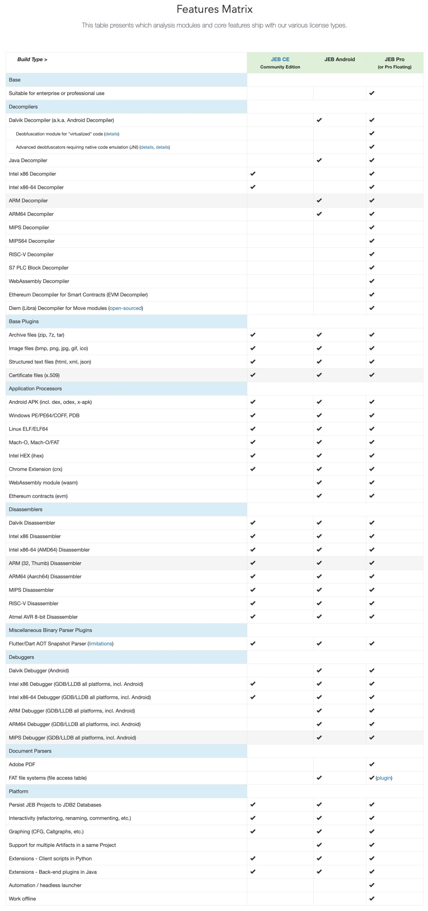
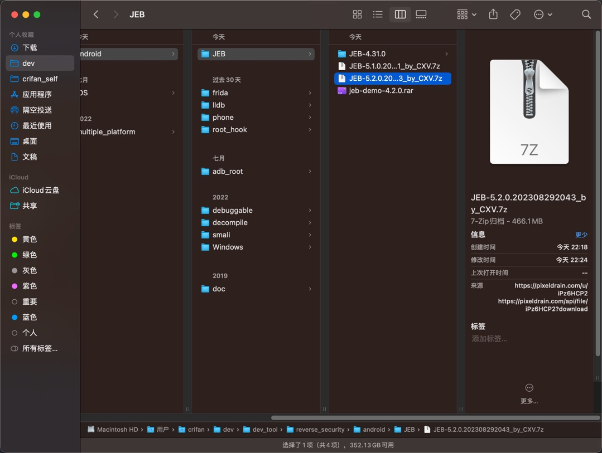
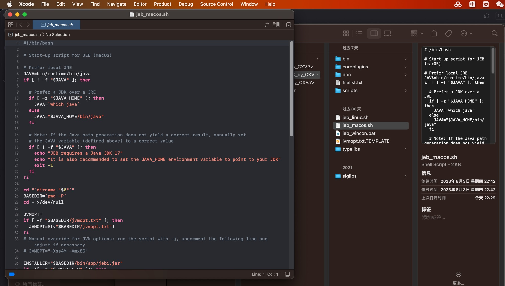
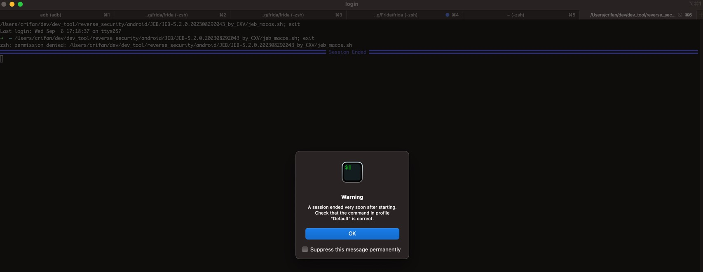
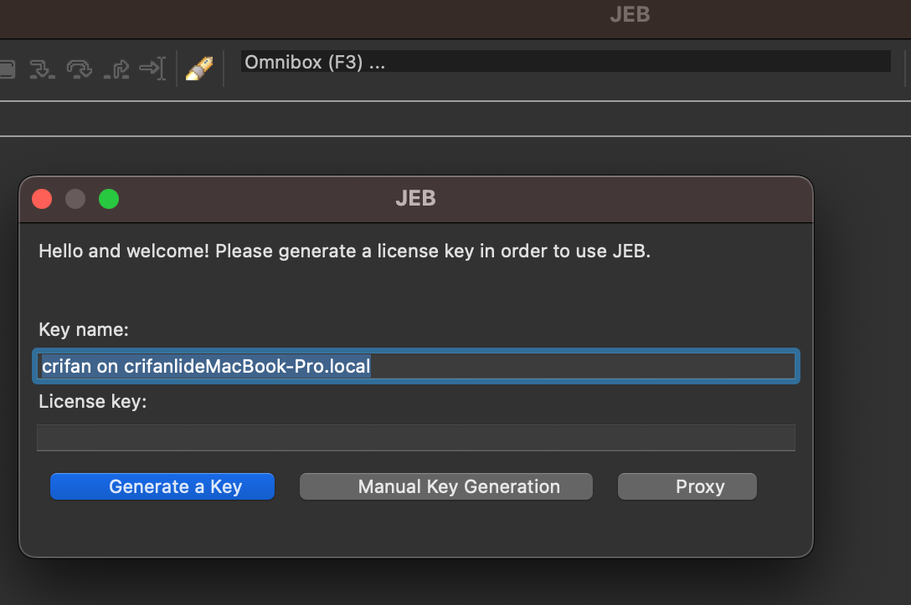
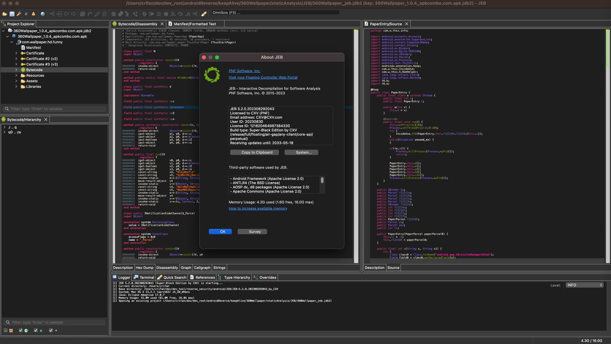

下载运行JEB
- JEB版本概述
- 收费的：
JEB Pro、JEB Android- 用于演示功能的，可以免费下载的：
JEB Demo
- 用于演示功能的，可以免费下载的：
- 免费的：
JEB CE=JEB Community Edition
- 收费的：
- JEB的不同版本功能对比
- 
官网免费版
- JEB免费版
- 有2个
- 社区版=JEB Community Edition = JEB Home Edition x86
- 注：不支持Android（的arm），仅支持（32位和64位的）x86
- 下载页面：JEB Community Edition - JEB Decompiler by PNF Software
- 演示版=JEB Demo
- 注：功能有很多限制，主要用于试用（功能演示）
- 下载页面：Download a trial version of JEB - JEB Decompiler by PNF Software
- 社区版=JEB Community Edition = JEB Home Edition x86
- 有2个
JEB收费版
- JEB收费版
- JEB Pro
- 下载
- JEB Pro
JEB收费版的破解版
仅供学习研究技术用
此处提供破解版，仅供学习研究技术用，请勿用于其他非法和商业用途。请支持正版。
如有侵权，请联系笔者删除
- 下载JEB
- 下载地址：JEB-5.2.0.202308292043_by_CXV.7z ~ pixeldrain
- 下载得到 460MB+ 的：
JEB-5.2.0.202308292043_by_CXV.7z- 
- 下载得到 460MB+ 的：
- 下载地址：JEB-5.2.0.202308292043_by_CXV.7z ~ pixeldrain
- 运行JEB
- 解压后，运行对应脚本
- Mac的：
jeb_macos.sh- 
- Win的：
jeb_wincon.bat - Linux的：
jeb_linux.sh
- Mac的：
- 运行方式
- 如果双击脚本，无法自动运行的话
- 比如
- 调用文本编辑器打开sh脚本
- 报其他错误：
A session ended very soon after starting. Check that the command in profile "Default" is correct.- 
- 比如
- 则去加上可执行权限
- Mac中
chmod +x jeb_macos.sh
- Mac中
- 再放到终端terminal/shell中去运行
- 常见终端
- Mac：
iTerm2/shell./jeb_macos.sh- 附录：此处终端启动的log日志
➜ JEB-5.2.0.202308292043_by_CXV ./jeb_macos.sh [I] JEB 5.2.0.202308292043 (Super-Black Edition by CXV) is starting... [I] Current directory: /Users/crifan/dev/dev_tool/reverse_security/android/JEB/JEB-5.2.0.202308292043_by_CXV [I] Base directory: /Users/crifan/dev/dev_tool/reverse_security/android/JEB/JEB-5.2.0.202308292043_by_CXV [I] System: Mac OS X 13.2.1 (aarch64) zh_CN_#Hans [I] Java: Eclipse Adoptium 17.0.7 [I] Memory Usage: 31.4M used (80.6M free, 16.0G max)
- 附录：此处终端启动的log日志
- Linux：自带shell
- Win：
cmd.exe
- Mac：
- 常见终端
- 首次启动时
- 需要去生成key，再点击继续，即可
- 点击
Generate a Key->Continue- 
- 点击
- 需要去生成key，再点击继续，即可
- 如果双击脚本，无法自动运行的话
- 主界面
- 
- 解压后，运行对应脚本